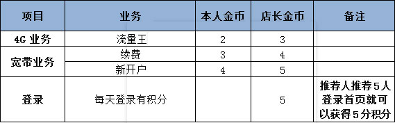
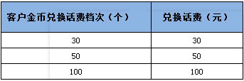
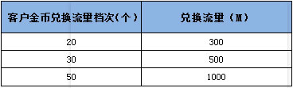
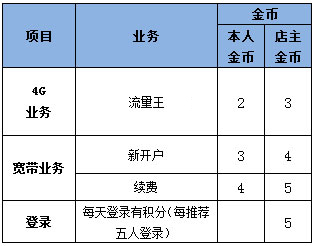

一、活动介绍
又到月结，呜呼哀哉，余额不足，一不小心就被停机，赠送话费也救不了你！等着求救不如自救！只要在揭阳移动4G微店开店为他人办理业务，就可获得移动金币奖励，金币可以兑换话费、流量，帮人帮自己，从此月结不再痛！
二、操作说明
（1）用户若想赚取更多的金币，可在微店的“赚取金币”专区点击“我要做店长”，输入手机号码后注册成为揭阳移动4G微店店长，成功注册后即可为他人办理业务，赚得更多金币。
（2）点击“我要做店长”即可为客户办理4G业务、宽带业务以及登录推荐。
（3）为客户办理相关业务后须经客户确认，确认方式有短信验证和扫描二维码确认。
（4）点击“我的金币”可以查询客户自己的金币明细、金币兑换记录以及进行金币兑换。
二、金币标准
（一）金币奖励标准：

备注：办理表格以外的业务不奖励金币
（二）客户“金币”兑换话费标准：
1个“金币”兑换1元话费，客户“金币”兑换话费分为30/50/100三档，具体如下：

备注：若客户“金币”不足30个，即无法兑换话费。
（三）客户“金币”兑换流量标准：
依据1个“金币”=1元话费，金币兑换流量的比例按照与所兑换流量档次等同的流量叠加包价格计算，客户“金币”兑换流量分为300M/500M/1000M三档，即20个“金币”=20元话费=300M流量叠加包价格，具体如下：

备注：若客户“金币”不足20个，即无法兑换流量。
（四）金币兑换说明

备注：其他具体规则请参考“店长手册”。
二、金币标准
（1）本活动仅限揭阳移动客户参加。
（2）同一手机号码当月办理手机流量套餐，仅计提一次金币奖励。所奖励金币数量以第一次所办套餐为标准。
（3）动感地带、神州行老客户当月办理流量王，同一手机号码，只能获得一次金币奖励，所奖励金币数量以第一次所办套餐为标准。
（4）店长所获得的金币可以兑换话费、流量。话费兑换标准为1个金币=1元话费，可兑换30元、50元、100元话费；金币兑换流量的比例按照与所兑换流量档次等同的流量叠加包价格计算，流量兑换档次为300M/500M/1000M。兑换后系统金币同步减少。
（5）金币兑换流量采取先赠费，再帮客户办理对应流量叠加包的形式。如兑换300M流量，先赠送20元话费，再帮客户办理20元300M流量叠加包。
（6）店主每月兑换话费不得超过500元，兑换流量不得超过2G。
（7）被代理人经店主推荐后成功办理业务，金币奖励归店主所有。
（8）宽带业务的金币奖励到账时间以系统成功归档的时间为准，其他业务则为实时到账。
（9） 公务机、测试号所办理业务不计入可奖励的业务范围。
（10）请保持手机状态正常，兑换流量或话费时如遇到号码状态异常出现无法兑换状况，视为放弃兑换。